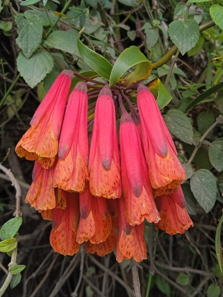

Alstroemerieae
Bomarea multiflora (L.f.) Mirb.
Publicado por primera vez en Hist. Nat. Pl. 9: 72 (1804).

Indexaciones: Catalogue of Life, GBIF, iNaturalist, IPNI, World Flora Online, The Plant List.
Nombres comunes: Pecosa, Rompeplatos, tetona pecosa de Nueva Granada; Trailing lily (eng); bomarea (swe); bomarea mnohokvetá (slk).
Clasificación taxonómica
Dominio: Eukaryota (Chatton, 1925) Whittaker & Margulis, 1978 > Reino: Plantae > Subreino: Pteridobiotina Britton & Brown > Filo: Tracheophyta > Clase: Liliopsida > Orden: Liliales Perleb > Familia: Alstroemeriaceae Dumort. > Género: Bomarea Mirb. > Especie: Bomarea multiflora (L.f.) Mirb.
Sinónimos y combinaciones:
Sinónimos homotípicos (combinaciones):
- Alstroemeria multiflora L.f.
Sinónimos heterotípicos:
- Alstroemeria bredemeyeriana Willd. ex Schult. & Schult.f.
- Alstroemeria caldasiana (Herb.) Hemsl.
- Alstroemeria caldasii Kunth
- Alstroemeria floribunda Kunth
- Alstroemeria purpurea Willd. ex Steud.
- Bomarea ambigua Sodiro
- Bomarea borjae Sodiro
- Bomarea caldasiana Herb.
- Bomarea caldasii (Kunth) Asch. & Graebn.
- Bomarea caldasii (Kunth) Herb.
- Bomarea caldasii var. quitensis Killip ex Diels
- Bomarea floribunda (Kunth) Herb.
- Bomarea foliolosa Kraenzl.
- Bomarea frondea Mast.
- Bomarea halliana Herb.
- Bomarea microcephala Sodiro
- Bomarea oligantha Baker
- Bomarea rigidifolia Sodiro
- Bomarea turneriana Herb.
- Bomarea vegasana Killip
- Bomarea vestita Baker
Distribución
Bomarea multiflora (L.f.) Mirb. ha sido registrada en las siguientes áreas geográficas:
Colombia; Ecuador.
Referencias:
- Amaryllidaceae: 116 (1837)
- Amaryllidaceae: 117 (1837)
- Amaryllidaceae: 119 (1837)
- Biblioth. Bot. 29(116): 68 (1937)
- Biol. Centr.-Amer., Bot. 3: 336 (1884)
- Bot. Jahrb. Syst. 8: 213 (1887)
- Bull. Misc. Inform. Kew 1913: 189 (1913)
- Edwards’s Bot. Reg. 28: t. 66 (1842)
- F.W.H.von Humboldt, A.J.A.Bonpland & C.S.Kunth, Nov. Gen. Sp. 1: 283 (1816)
- Gard. Chron., n.s., 17: 668 (1882)
- Gard. Chron., n.s., 7: 648 (1877)
- Hist. Nat. Pl. 9: 72 (1804)
- J. Washington Acad. Sci. 25: 373 (1935)
- Nomencl. Bot., ed. 2. 1: 61 (1840)
- POWO record for urn:lsid:ipni.org:names:63359-1
- Sert. Fl. Ecuad. 2: 44 (1908)
- Sert. Fl. Ecuad. 2: 45 (1908)
- Sert. Fl. Ecuad. 2: 52 (1908)
- Suppl. Pl.: 207 (1782)
- Syn. Mitteleur. Fl. [Ascherson & Graebner]. 3: 431. 1906
- Syst. Veg. 7: 751 (1829)
Susceptibilidad de uso y aprovechamiento sostenible
Tóxico para vertebrados:
- El fruto y las semillas contienen una sustancia tóxica, que puede causar la muerte a animales medianos (perros) y grandes, incluso al hombre.
Medicinal:
- Se usa para tratar “pegados” (sic) del seno.
- Trata afecciones indeterminadas.